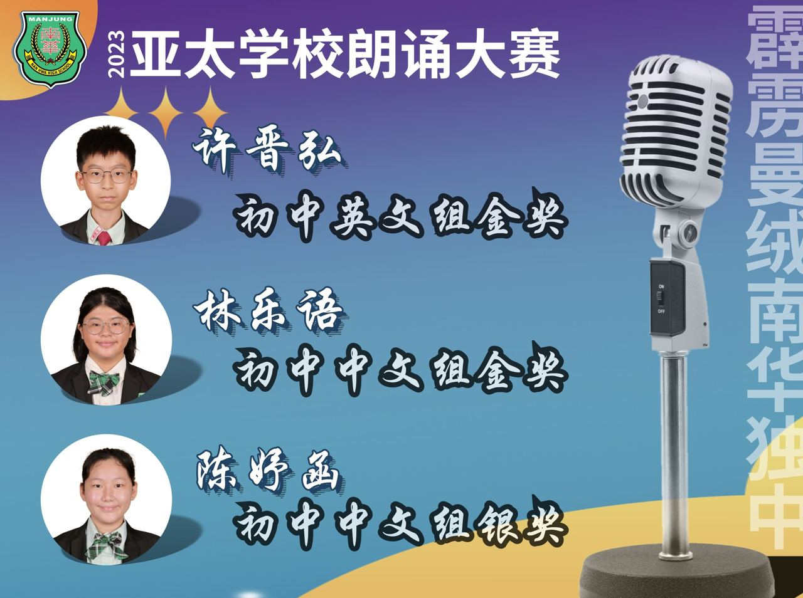
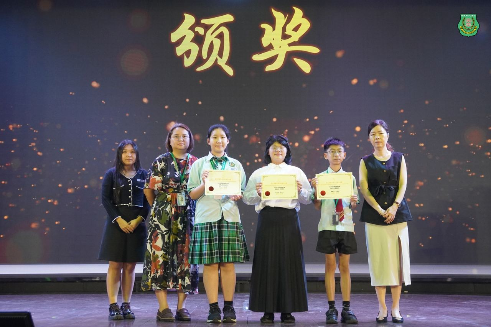

南华独中学生载誉而归
南华独中学生载誉而归
2024亚太学校朗诵大赛告捷
南华独中的学生们在近日举行的2024亚太学校朗诵大赛中表现出色，为校争光。三位学生在不同组别中脱颖而出，展现卓越朗诵才能。
许晋弘同学在李淑桦老师的指导下，荣获初中英文组金奖。林乐语同学在陈明芬老师的悉心教导下，摘得初中中文组金奖。陈妤函同学则在杨秀珍老师的指导下，获得初中中文组银奖。这些优异的成绩充分体现了南华独中在语言教育方面的卓越成果。
南华独中华文科主任廖丽华老师受访时表示，南华独中向来重视培养学生的语言表达能力和文学素养，尤其对于热爱朗诵的学生给予全力的培训与锻炼，希望能为他们中文底蕴与未来发展打下坚实基础。英文科主任李淑桦老师也分享了她的看法，认为学生能在如此高水平的国际比赛中获得金奖，充分证明了学生具备优秀的英语表达能力，并表示马来西亚是多源流语言的国家，南华独中不但重视英语教学质量，更愿意培养具有国际视野的未来栋梁。
南华独中校长陈丽冰博士为学生的努力获得回报给予高度的认可，并为学生的优秀表现成为全校学生的榜样感到骄傲。陈校长强调“南华独中一直致力于全人教育，注重学生在学术和艺术方面的均衡发展。这次在亚太学校朗诵大赛中载誉而归，除了要感谢老师们不遗余力培训学生，体现了本校教风：‘爱生、敬业、善导、乐研’的精神，学生在接受语言才能培训上也展现了高度的专注与热情，体现了他们的文化素养和自信。南华独中将继续为学生提供更多展示才华的平台，培养他们成为具有国际竞争力的未来人才。”
#亚太学校朗诵大赛 #南华独中 #曼绒 #实兆远

